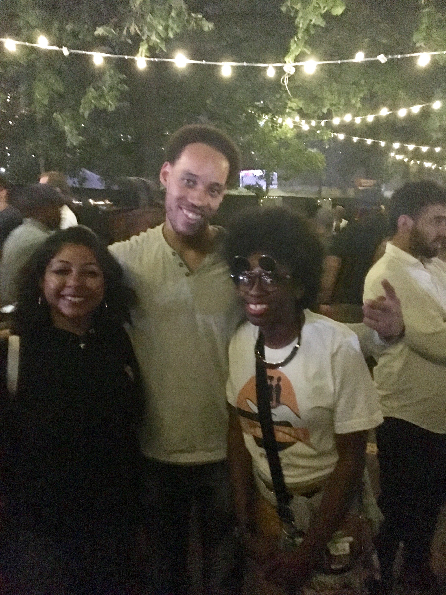

Farm Fresh Tour
Farm Fresh Tour
 29 Rooms
29 Rooms
 AfroPunk Festival
AfroPunk Festival
 Jazz Age Lawn Party
Jazz Age Lawn Party
Ever been around Midtown in early October and noticed a bunch of people dressed in costume and wondered why are these people dressed in costume? It's a bit too early for Halloween! Those people you encountered were more than likely dressed in costume because they were attending NY Comic Con. NY Comic Con also known as 'Nerdvana,' takes place in NYC every Fall at the Jacob Javits Center. Since it's inception, it has grown from being a two-day event to being a four-day event due to popular demand. Moreover, the convention started off just being held in one section of the Javits Center to now taking over the entire space. Fans from all over the world come to the city for this event to commiserate with fellow comic book and pop culture fans. This convention offers workshops, panels, meetups and contests that badge holders can participate in.
My first experience attending Comic Con was in October 2015. One of the main events of the convention that particular year was the 25th anniversary of the sci-fi film, "Back to the Future." Fans dressed up as the mad scientist and Marty McFly in order to earn the rare and beloved Crystal Pepsi. The friend I attended the con with dressed up as Marty McFly. He was able to earn not one but TWO Crystal Pepsi bottles! There was a huge setup to celebrate the movie reaching that milestone including having a DeLereon set up in the middle of the main floor at the Javits Center. It was a great and ominous exprience seeing so many people cosplay as characters from the film. My friend felt right at home being in a center full of fellow Marty McFlys.
Beyond the panels and workshops the con offers, there is a HUGE showroom floor that takes up the bulk of the main floor in the Javits Center. The showroom floor consists of vendors, publishing companies, illustrators, artists and interactive booths for fans to explore and enjoy. I particularly enjoy talking with the various independent comic book publishers who are more than willing to speak to fans about the work their company produces. The vendors is another great aspect of the showroom floor as many of them sell rare and unique comic book and pop culture merchandise that you either haven't seen before or won't be able to find anywhere else. Many of the comic book stores that are located in the city such as Midtown Comics and Forbidden Planet also have booths at the convention and even offer fans discount codes to use on merchandise at the convention or at their brick and mortar locations.
Seeing the cosplay alone will drive any fan of comic books and pop culture to purchase a pass to Comic Con. What is cosplay? Cosplay, according to the Merriam Webster dictionary is "the practice of dressing up as a character from a movie, book, or video game, especially one from the Japanese genres of manga and anime." I have seen SOME AMAZING cosplay (see below). The best cosplayers I have seen have been those who created their looks from head to toe from SCRATCH. The cosplayers that have brought a literal smile to my face have been those who dressed as characters that made me nostalgic of my childhood. The convention holds contests for cosplayers who compete against one another for a monetary prize ("money, money, money, MON-EY!").
For all the panels, workshops, vendors, interactive booths and fan meetups, the convention isn't expensive to attend! The weekend days (Friday through Saturday) are priced at a higher level ($50) while Thursday and Sunday are $40 to attend currently. Due to the construction happening at the Javits until further notice, the passes were sold by day without the three or four day pass option like previous years. If you would plan to attend the con for more than one day, the three or four day pass would ideally be the best option as you would save money rather than purchasing individual day passes.
I learned about the Farm Fresh Tours from a friend of mine who moved here from Birmingham, AL. She informed me that the Metro-North offers one day getaway packages that provide you with a tour as well as a round-trip rail ticket for one set price which is listed on the Metro-North Getaways and Packages website. Each tour that is offered via the Metro-North comes with an intinerary of activities. The itinerary lists the expected arrivals and departures of each stop on the tour.
The first tour that I attended was the Farm Fresh Ice Cream and Wine Tour. There is a special ticket that you have to get in order to attend the tour. Since it was my first time attending one of their tours, I went to the ticket booth and asked the ticket person for the Farm Fresh Tour ticket package. I received two tickets: a round trip ticket for the train and a ticket for the tour which I was instructed to show to the tour bus guide. The itinerary instructed to take the Hudson Line to the last stop: Poughkeepsie which is about two hours away from NYC.
I've taken the Metro-North many times but this was my very first time riding on the green line, better known as the Hudson Line. The Hudson line rides alongside the Hudson River. It is a SIGHT to see especially during the Fall. Make sure you sit on the side where the train rides beside the river so that you can take in the amazing views of the scenery. During the Fall, it is an absolutely stunning view as the foliage settles in. Although the train ride is two hours long, it doesn't feel like it as it is such an easy going train ride. However, this particular line on the Metro-North especially during the Summer and Fall seasons is rather popular. Make sure you arrive early to secure a seat on the train. There are many hiking and biking trails that New Yorkers like to do during the weekends. While I was on the train, it got so packed that people were standing in the aisle all the way to Beacon, which is two stops away from Poughkeepsie, the last stop.
The tour we took made FOUR stops. The first stop was in the town of Mill Brook. We were given a little over an hour to explore the downtown area of this small rural town. There, I spotted restaurants, of which many of them are farm to table, locally sourcing their produce that is grown nearby. There were also many antiques shops which I loved (You never know what you could find!). My friends and I stopped into Aurelia, an Italian-New American restaurant. The owner gave some food off their menu to try: Gnocchi and Tiramisu. Both were incredibly fresh and delicious (I'll be back!).
The next stop that we made was at Clinton Vineyards. Did you know that NY state is home to over one thousand vineyards? I didn't know either until I went on this tour and discovered that New York State is Wine Country, haha. The owner of the vineyard and his wife who now runs the operations there were both born and raised in the Bronx! At this stop, there was a wine tasting and the owner's wife explains to everyone what goes into producing each wine that is being offered to sample. During the 2016 Presidential Race and while Former President Clinton presided in office, the vineyard developed and produced a 'Presidential Wine' that they sold for a limited time. Inside the gift shop, there are many photos of the owners along with the Clintons hanging on the walls.
Following Clinton Vineyards, the bus drove us to Meadowlands Farm. As soon as I stopped off the bus, my nose got a whiff of fresh apple cider and apple cider donuts. I bought several donuts--they were delicious, fresh and served warm! The farm covers a lot of acreage. I saw some donkeys wondering nearby the fence and decided to go and play with them while my friends shopped in the market. All of the produce that they offer at Meadowlands is completely organic and GMO-free. Part of the magic of this farm is that they allow local farmers to come and cultivate crops for a small fee in order to encourage local business growth and opportunity for those interested to learn how to farm. While there, I also learned that the farm was a stop on the Underground Railroad. The farmers during that time period would hide and stow away runaway slaves.
The last but not least stop of the tour was at Zoey's Ice Cream Barn. Zoey, the owner is a Culinary Institute of America graduate who decided to open up her own ice cream parlor after graduation. The ice cream at Zoey's is said to go from cow to cone in just three days; in fact, it is stated right outside the barn on the storefornt sign. Anyone who knows me well knows how much I love ice cream. I have had my fair share of ice cream over the years but by far, the ice cream from Zoey's has to be the freshest ice cream I have ever had! Moreover, since the tour was in the Fall, the menu offered a lot of seasonal flavors. In case you're wondering, they do offer a pumpkin flavor. I ordered it and it was AMAZING!
29 Rooms is curated and produced by media outlet Refinery29. In it's third year, it has become one of the hottest tickets to snag during NYC Fashion Week (Fall). I just so happened to have received an email about the event months in advance. Little did the email sender know that I had been waiting in anticipation for this year's event as the photos that I saw from 2016 on social media blew my mind away.
Refinery 29 converts a warehouse in the city (Brooklyn) into 29 rooms that you can enter and fully immerse yourself into a different experience. Each of the rooms are curated by either an artist, company or celebrity. Some of the rooms have greater causes such as gender equality or mental health awareness. Some of the rooms require hands-on participation. For example, this year one of the rooms was designed by the actor Jake Gyllenhaal. His room asked for people to write down something they're afraid of on a sheet of paper. Once complete, there are shredders set up throughout the room where you can shred the paper with your fear written on it; it served as a way to release whatever fear a person may be holding onto. The room itself was filled with shredded piles of paper, all paper from the exercise of participants.
This year, there were several rooms that had politcal overtones. There was a room that had a gender neutral bathroom installed to call to attention that all states should implement these into their businesses and more. There was another room that was about the Women's Rights March on Washington. It included a table full of postcards and a binder where you could find your local senator or representative and write to them about whatever issues you have.
MY favorite room/experience was the room sponsored by Ulta Beauty. Inside this space was a carousel! The carousel had life size models of makeup products such as lipstick, a compact, and a nail polish bottle. Additionally, you could ride the carousel! It moved! At the end of the ride, my friend and I were escorted to an area where they had several vending machines that were filled with makeup products. They gave away free makeup! The portions were small but it was a free giveaway; that's a win-win in my book!
Afro Punk takes place at the end of every August in the heart of downtown Brooklyn at Commodore Barry Park. In its formative years, admission to the event was donation based however since the event has wildly grown in popularity, prospective attendees must purchase tickets. I've attended this event both when it was "free 99" and when they began charging to attend. In my personal opinion, I enjoyed the event more when I paid to attend simply because the organization of the event was a lot more polished. They offered more activities, bigger musical acts and a greater variety in food vendors. The first year I went, my friends and I had to leave the park in order to purchase some food to eat. We returned after we ate but having to walk and find something to eat, to have to return to the festival afterwards was CUMBERSOME. However, back then festival goers were allowed to reenter after leaving. Now, there is no re-entrance.
One of the great aspects about this festival is the fashion! Afro Punk encourages people to be free and be themselves; many of those who attend create elaborate outfits to wear to the festival. Many of the outfits that people wear incorporate aspects of African and African-American culture and history into their outfits. It is truly a sight to see so much so that many who attend bring professional cameras along with them to document this.
The Jazz Age Lawn Party occurs twice a year during the Summer on Governor's Island. In order to get to Governor's Island, there is a ferry that you can board that is located next to the South Ferry Terminal. The ticket to the event gives you a round trip boarding pass for the ferry.
Once my friends and I boarded the ferry to Governor's Island, I felt like I was a world away. The ferry was like a time machine that took us from present day to the height of the Roaring Twenties. Every one that was aboard the ferry was dressed in garb from that time period. It was a bright and sunny outside, not a cloud in sight; it was a perfect day to picnic outside.
There was a long line to enter into the event itself but the line moved quickly as there were designated area for VIP ticketholders and regular ticketholders. Once inside the event, you are met with a row of vendors selling food, clothing and accessories from the 1920s. However, my eyes were drawn to the grand stage where a live band was playing. In front of the stage was a large wooden dancefloor where people could dance if they wanted to. When the opportunity presented itself, people stopped what they were doing and got on the dancefloor busting out moves from way back when such as 'The Charleston.' There were also performances from a dance company that specializes in 1920s dance that performed a few pieces during my time there. Watching these performances was exciting; it felt like watching a silent movie in live action.
What captivated me the most about this event in particular was how people were dressed. It was so impressive! A lot of people in attendance put a lot of time, money and effort into developing an outfit that was befitting of the event. I was so entralled by the costuming that I asked attendees if I could take their picture. All of them luckily agreed to do it.